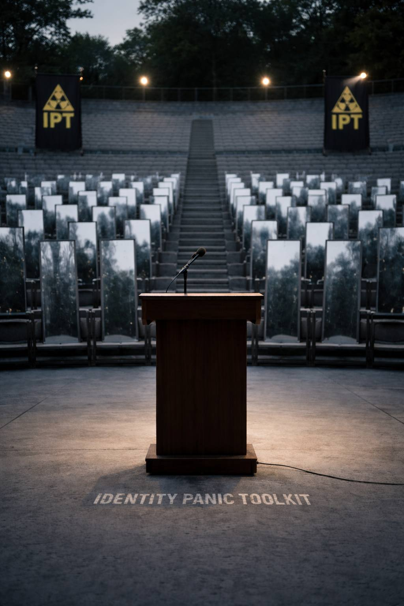

Parasocial Bonds, Mortality Fear, and the Illusion of Anchored Identity
When life starts to feel like it’s slipping out of your hands 🌪️, the mind doesn’t just panic…
it reaches.
It reaches for something that feels larger than fear. Something that looks stable. Certain. Untouched.
That’s the pulse behind Terror Management Theory:
When mortality, chaos, insignificance, or collapse become visible, humans cling tighter to identities, symbols, belief systems, and heroic figures that make life feel structured, meaningful, and survivable 🧱
And in that atmosphere…
Parasocial bonds stop being casual.
They stop being “just content.”
They become existential anchors ⚓
A creator, influencer, celebrity, or public figure can transform into a kind of portable myth 🎭
Their persona becomes a borrowed shelter when your own sense of self feels under construction 🏗️
The modern attention field is saturated:
Then suddenly… on your screen appears someone:
Your nervous system exhales.
Not because they are literally saving you… but because they symbolize endurance.
They feel like:
For a moment, attaching to them feels like attaching to something solid 🧱
Parasocial attachment is not passive.
It’s participatory… internally.
You don’t just watch them. You begin to inhabit them.
This is borrowed selfhood.
A kind of psychological co-piloting 🛫
And while it softens fear… it also quietly blurs identity boundaries.
Where do they end…
and where do you begin?
Parasocial bonds rarely stay one-on-one.
They expand into:
Under identity stress, this feels like oxygen.
You gain:
But here’s the twist:
When a figure becomes tied to your meaning… criticism of them feels like damage to you.
That’s where TMT and parasocial attachment start marching together in heavy boots 👢👢
Curiosity shrinks.
Nuance thins.
Defense rises.
Watch the cycle spin:
😶 Fear of insignificance
🪞 Over-identification with a symbolic figure
🔥 Outrage or devotion as pseudo-purpose
💥 Collapse when the figure disappoints
🔄 Urgent search for a new savior
This is the parasocial treadmill.
An economy where attention fuels identity… and identity keeps needing more fuel ⛽
In an era where traditional belonging structures are cracking 🧱💔… parasocial relationships become emotional scaffolding.
They feel real because your brain responds to:
A screen can simulate presence well enough to create attachment without reciprocity.
That doesn’t make it evil.
It makes it human.
These bonds often point to unmet needs:
The problem begins when the bond shifts from:
support → substitute
Parasocial bonds aren’t inherently harmful.
But when they replace real reciprocity, they can trap you inside someone else’s identity structure 🧠🔒 instead of helping you build your own.
The exit is not rejection.
It’s recognition 🔦
Shift the question:
Instead of:
“Why am I attached to them?”
Ask:
What value am I reaching for through them? 🧩
What part of me wakes up in their presence? ⚡
What trait am I outsourcing instead of embodying? 🔁
What hunger is this temporarily feeding? 🍽️
Because what they activate is real:
That signal is yours.
They didn’t create it.
They reflected it.
You don’t have to unfollow.
You don’t have to detach coldly.
You don’t have to feel ashamed.
Just notice:
Don’t worship the mirror 🪞
Reclaim the reflection.
📡
Follow yourself back.